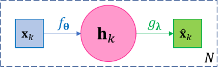
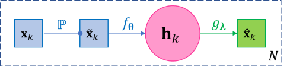

Autoencoder Networks¶
Given data \(\mathbf{x}_{1},\ldots,\mathbf{x}_{N}\), a basic autoencoder is a two-layer function composition \(g_{𝛉} \circ f_{𝛌}\) aiming at self-regression, i.e. the objective of autoencoder is to find a function \(f_{𝛉}\), known as encoder, and another function \(g_{𝛌}\), known as decoder, such that
|  |
\[\mathbf{x}_{k} \approx {\widehat{\mathbf{x}}}_{k} = g_{𝛌}\left( f_{𝛉}\left( \mathbf{x}_{k} \right) \right),k = 1,\ldots,N\]
|
Figure 3-4 The diagram of basic autoencoder. |
{kind=link}
Since each function is associated with its own parameters, we may omit the parameters and denote the functions as just \(f,g\) for simplicity. The loss function \(ℓ\) is defined for reconstruction \({\widehat{\mathbf{x}}}_{k}`s and original input :math:\)mathbf{x}_{k}` s, such like the squared error \(ℓ=\sum_{k = 1}^{N}\left\| \mathbf{x}_{k} - {\widehat{\mathbf{x}}}_{k} \right\|_{2}^{2}\). One main purpose of autoencoder is to find representation of the original data, which is an essential task in almost all machine learning problems. Let \(\mathbf{h}_{k} = f\left( \mathbf{x}_{k} \right)\) and call the collection of \(\mathbf{h}_{1},\ldots,\mathbf{h}_{N}\) as the hidden layer of the autoencoder, and together with \(f,g\), they can be viewed as a representation of \(\mathbf{x}_{1},\ldots,\mathbf{x}_{N}\). For example, if \(f,g\) are affine functions like \(f\left( \mathbf{x} \right) = \mathbf{V}\mathbf{x} + \mathbf{b}\) and \(g\left( \mathbf{h} \right) = \mathbf{\text{Uh}} + \mathbf{c}\), then \(\mathbf{U},\mathbf{c},\mathbf{h}_{1},\ldots,\mathbf{h}_{k}\) constitute the representation of the original data \(\mathbf{x}_{1},\ldots,\mathbf{x}_{N}\). Very often we design \(\dim\mathbf{h}_{k} < \dim\mathbf{x}_{k},\forall k\), so that we achieve dimension reduction, then we call such autoencoder undercomplete and those \(\mathbf{h}_{k}\) s as undercomplete representations; on the contrary, if we let \(\dim\mathbf{h}_{k} > \dim\mathbf{x}_{k},\forall k\), then we call such autoencoder overcomplete and those \(\mathbf{h}_{k}\) s as overcomplete representations, which maps data points to higher dimensional space and can be useful for classification.
From Eq.2.13 and Figure 3-4, it is clear an autoencoder of above basic structure is a feed-forward network, therefore any discussion of FFN applies to autoencoder, for example, the back propagation process, and that adding additional layers such as \(\mathbf{x}_{k} \approx g \circ f_{l} \circ f_{l - 1} \circ \ldots \circ f_{1}\left( \mathbf{x}_{k} \right)\) can result in better self-regression performance. Also, autoencoder is usually applied as part of a more complex model. The goal of autoencoder is typically not self-regression itself, rather, it should serve the purpose of the entire model. In practice, usually the self-regression can perform arbitrarily well when \(\mathbf{h}_{k}\) is “complete enough”, e.g. \(\mathbf{h}_{k}\) has a dimension near \(\dim\mathbf{x}_{k}\) or an overcomplete dimension, in which case \(\mathbf{h}_{k}\) could simply just copy \(\mathbf{x}_{k}\) and \(f,g\) could turn out “nearly” identity functions. Therefore, how well does the autoencoder self-regresses make sense as one of the quality indicators of the representation when other main objectives are satisfied. For example, if we aim at dimension reduction, the self-regression performance makes sense when a certain level of “compression rate” is achieved.
Note: Autoencoder and Classic Dimension Reduction Techniques
The famous dimension reduction technique singular value decomposition (SVD) exactly falls in the category of autoencoder. Recall given data matrix \(\mathbf{X} = \left( \mathbf{x}_{1},\ldots,\mathbf{x}_{N} \right) \in \mathbb{R}^{m \times N}\) with columns being data entries and rows being feature vectors, then it decomposes \(\mathbf{X}\) as
where both \(\mathbf{U},\mathbf{V}\) are orthogonal matrices, \(\mathbf{U} \in \mathbb{R}^{m \times s},\mathbf{\Sigma} \in \mathbb{R}^{s \times s}\) and \(\mathbf{V} \in \mathbb{R}^{s \times N}\) where \(s = \operatorname{rank}\mathbf{X} \leq m\) and \(\mathbf{\Sigma}\) is a diagonal matrix with \(s\) eigenvalues of \(\mathbf{X}\) descendingly arranged in the diagonal. If we only keep the top \(r < s\) eigenvalues in \(\mathbf{\Sigma}\), denoted as \(\mathbf{\Sigma}_{r}\), then we only need to keep the first \(r\) columns of \(\mathbf{U}\) and \(\mathbf{V}\) and have approximation
in terms of minimum loss of 2-norm or Frobenius norm. From perspective of autoencoder, \(\mathbf{h}_{k} = f\left( \mathbf{x}_{k} \right) = \mathbf{\Sigma}_{r}\mathbf{V}_{r}^{\rm{T}}\left( k \right)\) is the encoder (a non-linear encoder), and \(g\left( \mathbf{h}_{k} \right) = \mathbf{U}_{r}\mathbf{h}_{k}\) is the decoder. The original data has \(\text{mN}\) numbers. When \(r < \frac{\text{mN}}{m + N}\), the representation has \(mr + rN < mN\) numbers and saves space. When \(N\) is large, the inequality is dominated by \(N\), and basically any \(r < m\) can save space.
Likewise, the Principal Component Analysis (PCA) is also an autoencoder. PCA first calculates the covariance matrix \(\mathbf{S}\) w.r.t. the feature vectors (rows of \(\mathbf{X}\)), and then all orthonormal eigenvectors of \(\mathbf{S}\) constitutes the columns of an orthonormal matrix \(\mathbf{P}\) s.t. \(\mathbf{S} = \mathbf{\text{P??}}\mathbf{P}^{\rm{T}}\), and then let \(\mathbf{Y} = \mathbf{P}^{\rm{T}}\mathbf{X} = \mathbf{P}^{- 1}\mathbf{X}\) (\(\mathbf{P}^{\rm{T}} = \mathbf{P}^{- 1}\) because \(\mathbf{P}\) is an orthogonal matrix). The columns of \(\mathbf{P}\) are called principal components. Then clearly
If we choose to keep only the first \(r < m\) principal components, i.e. the first \(r\) columns of \(\mathbf{P}\), denoted by \(\mathbf{P}_{r}\), and let \(\mathbf{H}\mathbf{=}\mathbf{P}_{r}^{\rm{T}}\mathbf{X}\), then the PCA theory indicates
where the approximation is in terms of minimum loss of total variance. From the perspective of autoencoder, \(f\left( \mathbf{x} \right) = \mathbf{P}_{r}^{\rm{T}}\mathbf{x}\) is the encoder, and \(g\left( \mathbf{h} \right) = \mathbf{P}_{r}\mathbf{h}\) is the decoder.
As a summary, autoencoder is a generalization of classic dimension reduction techniques; it allows for any non-linear or liner encoders or decoders to be derived from optimization so all techniques for optimizations can come into play (e.g. regularization), and it allows for mapping data to higher dimensional space.
A widely used variant of the vanilla autoencoder model in Eq.2.13 is named denoising autoencoder (DAE), whose objective is to reconstruct the original data even when the input data are corrupted, or simply put DAE is trying to be more robust than the vanilla model. Besides finding a robust representation, an immediate application of DAE is clearly data denoising – given corrupted data, estimating the original data. The basic DAE is straightforward, but assumes the data in the training set is noiseless. Then a stochastic layer \({\widetilde{\mathbf{x}}}_{k}\mathbb{\sim P}\left( \cdot |\mathbf{x}_{k} \right)\) is added between \(\mathbf{x}_{k}\) and \(\mathbf{h}_{k}\), which means a noisy sample is first drawn from a distribution dependent on \(\mathbf{x}_{k}\) (e.g. with \(\mathbf{x}_{k}\) as its mean, or randomly setting some components of \(\mathbf{x}_{k}\) as zero, depending on the modeling needs), and then input \({\widetilde{\mathbf{x}}}_{k}\) into the encoder-decoder process as the following. \(\mathbb{P}\) is predefined and has no learnable parameters; \({\widetilde{\mathbf{x}}}_{k}\) needs to be resampled for every iteration or at least for every few iterations of training to avoid bias. Note the loss function \(ℓ\) is still defined for reconstruction \({\widehat{\mathbf{x}}}_{k}\) s and original input \(\mathbf{x}_{k}\) s.
|  |
\[\mathbf{x}_{k} \approx g_{𝛌}\left( f_{𝛉}\left( {\widetilde{\mathbf{x}}}_{k} \right) \right),{\widetilde{\mathbf{x}}}_{k}\mathbb{\sim P}\left( \cdot |\mathbf{x}_{k} \right),k = 1,\ldots,N\]
|
Figure 3-5 The diagram of basic denoising autoencoder. |
{kind=link}
A third popular variant is called the contractive autoencoder. It is basically not a new model, but simply adds a norm \(\left\| \mathbf{J}_{\mathbf{x}_{k}}f \right\|\) of the Jacobian matrix \(\mathbf{J}_{\mathbf{x}_{k}}f = \begin{pmatrix} \frac{\partial\mathbf{h}_{k}\left( 1 \right)}{\partial\mathbf{x}_{k}\left( 1 \right)} & \cdots & \frac{\partial\mathbf{h}_{k}\left( m \right)}{\partial\mathbf{x}_{k}\left( 1 \right)} \\ \vdots & \ddots & \vdots \\ \frac{\partial\mathbf{h}_{k}\left( m \right)}{\partial\mathbf{x}_{k}\left( 1 \right)} & \cdots & \frac{\partial\mathbf{h}_{k}\left( m \right)}{\partial\mathbf{x}_{k}\left( m \right)} \\ \end{pmatrix}\) as a penalty to the loss function, which can be combined with any other design of autoencoder. Such penalty is a common practice in numerical functional approximation to improve numerical stability. We call \(\left\| \mathbf{J}_{\mathbf{x}_{k}}f \right\|\) the contraction loss, where an intuitive explanation is that \(\left\| \mathbf{J}_{\mathbf{x}_{k}}f \right\|\) is small if its elements \(\frac{\partial\mathbf{h}_{k}\left( i \right)}{\partial\mathbf{x}_{k}\left( j \right)},i,j = 1,\ldots,m\) are small, which means the contraction loss prevents all components of the encoder \(f\) from having large derivatives along any axis, so that a mall perturbation in \(\mathbf{x}_{k}\) does not cause large change in \(\mathbf{h}_{k}\).